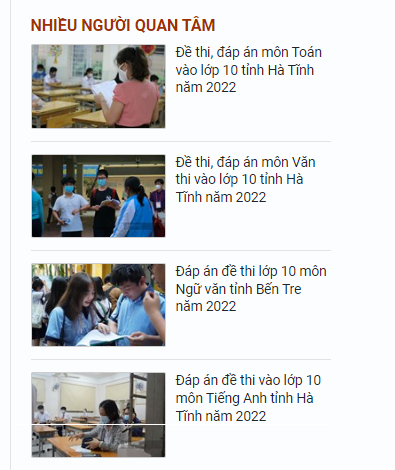
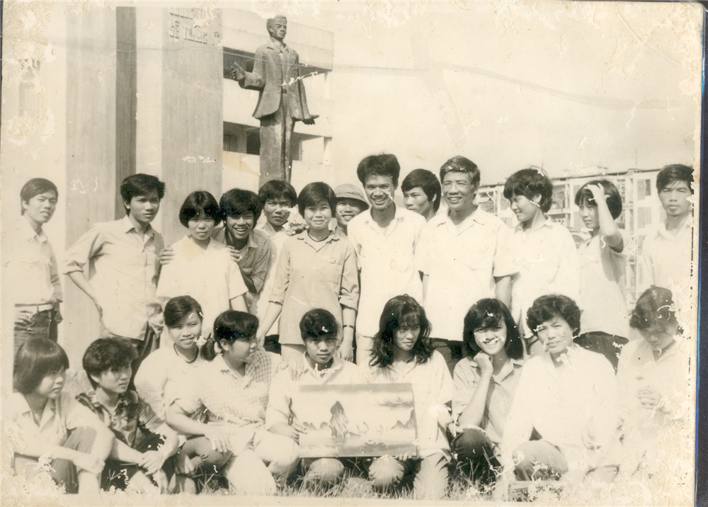

Trang chủ
Giới thiệu
Dạy và học
Tin tức
Văn bản
Album
Video
Vẹn nguyên ký ức về "trường Hoàng"

Bảy mươi năm dã trôi qua, bao thế hệ học sinh đã trưởng thành từ mái trường THPT chuyên Hoàng văn Thụ này. Bao niềm vui nỗi buồn tan hợp đã diến ra, tất cả vẫn đang tiếp bước trên những con đường mà mình đã chọn…
Như dòng Đà giang “trưởng thành mãi lên” từ núi rừng phía Tây Bắc Tổ quốc trong những tháng ngày gian khó, trường THPT Hoàng Văn Thụ như một dòng sông trên của mảnh đất Hòa Bình vẫn âm thầm chảy miệt mài với niềm tự hào trong hành trình tìm kiếm tri thức để hòa vào bể cả mênh mông. Trường THPT Hoàng Văn Thụ là một ngôi trường đã trải qua 70 năm xây dựng và trưởng thành (1947-2017) in sâu vào ký ức biết bao thế hệ học sinh chúng tôi những kỷ niệm không thể nào quên. Thời gian đã qua, lớp bụi thời gian có thể xóa nhòa đi tất cả nhưng trong hoài niệm của nững ai đã từng một lần đi qua trên chuyến đò tri thức mang tên THPT chuyên Hoàng Văn Thụ cách đây 28 năm vẫn hiện rõ những điều thiêng liêng trong cuộc đời người học trò. Bởi, gần 30 năm có thể xóa nhòa đi nhiều thứ nếu lòng ta muốn quên, nhưng nó sẽ là tất cả nếu ta mãi khắc ghi “Cái thủa ban đầu lưu luyến ấy, Ngàn năm hồ dễ mấy ai quên” (Thế Lữ)

Lớp HS trường THPT Hoàng Văn Thụ cuối những năm 80 của thế kỷ trước
Tôi vẫn còn nhớ như in những năm 1989, 1990 về trước, những ngày sống và học tập dưới mái trường, đó là những ngày đáng nhớ nhất, để lại nhiều cảm xúc, suy tư sâu sắc và đẹp đẽ trong cuộc đời mỗi cô, cậu học trò chúng tôi. Đó là khoảng thời gian đầu thập kỷ 90 của thế kỷ trước, khi “công trình thế kỷ” trên Sông Đà đang vào giai đoạn thi công cuối cùng hoàn tất hành trình sáng tạo ra năng lượng điện – thứ “vàng mười” của đất nước. Đó cũng là những ngày đầu tái lập tỉnh Hòa Bình, còn rất thiếu thốn khó khăn về cơ sở vật chất của một tỉnh miền núi. Song trong hoàn cảnh ấy càng làm cho tình thầy trò, nghĩa bạn bè trở nên đáng quí, đáng trân trọng biết bao. Chúng tôi, là những cô cậu học trò vừa rời trường PTCS từ các huyện, thị xã được bước chân vào nhà trường như vào một thế giới khác, bạn nào cũng hồi hộp, ngỡ ngàng, một chút lo lắng nhưng rất vui và tự hào…Tôi sao quên được những những ấn tượng không phai mờ trong hồi ức về những thầy cô giáo với hình ảnh thầy cô khi ấy: thầy Nguyễn Bạch Đằng là hiệu trưởng nhà trường vừa nghiêm khắc vừa gần gũi luôn có những bài học đạo lý nhân cách các trong buổi chào cờ sáng thứ 2, qua câu chuyện thầy kể “Thời pháp thuộc, người Pháp mở trường dạy học trong lễ chào cờ của họ khi có quốc ca cất lên bất kỳ ai đang làm gì đều phải đứng nghiêm chào cờ nếu không sẽ bị xử phạt nặng”. Điều đó, làm cho chúng tôi càng hiểu rõ hơn về lễ chào cờ đầu tuần; thầy Nguyễn Sĩ Đức – Phó hiệu trưởng trực tiếp dạy Toán, thầy hay lấy ví dụ từ chính những sự việc diễn ra hàng ngày khiến giời dạy Toán của thầy rất hấp dẫn, thầy Đặng Quang Ngàn dạy Toán với kiến thức phong phú, thầy Nguyễn Quang Vinh dạy Vật lý với những bài giảng chuyên sâu đầy say mê, thầy Trần Trung Ninh dạy Hóa học với cách dẫn dắt gần gũi mà sâu sắc, thầy Hoàng Văn Phú với phương pháp giảng dạy Toán rất khoa học, dễ hiểu …